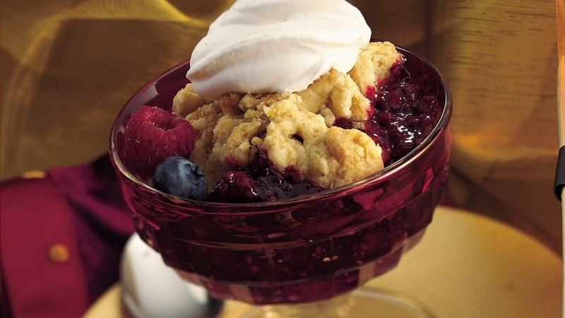

<!--
 Name:Neville Zou
 Student Id:
-->
<div class="pages">
<div data-page="projects" class="page no-toolbar no-navbar">
   <div class="page-content">
       <!--top header-->
      <div class="navbarpages">
         <div class="nav_left_logo"><a href="index.html"></a></div>
         <div class="nav_right_button">
            <a href="menu.html"></a>
            <a href="food-menu.html"></a>
         </div>
      </div>
	   <!--top header-->
      <div id="pages_maincontent">
         <!-- the header information of the page -->
         <h2 class="page_title">Our Recepie</h2><!-- heading tag-->
         <div class="post_single">
		 <!--Recipe Image And title-->
            <div class="featured_image">
               <!-- image tag for diplay image in browser-->
               <div class="post_title_single">
                  <h2>Merry Berry Cobbler</h2>
               </div>
                
            </div>
			<!--Recipe Image And title-->
            <div class="page_content">
			 <!--Recipe Detail-->
               <div class="entry">
                  <p><!-- starts new paregraph-->
                     Make merry with a triple berry warm and cozy cobbler.
                  </p>
                  <ul class="simple_list"><!-- unorder list-->
                     <li> Heat oven to 400°F. Grease 2-quart casserole with shortening. In 4-quart Dutch oven, mix granulated sugar and cornstarch. Add berries and lemon juice; toss until evenly coated. Heat to boiling. Boil 3 to 5 minutes (7 to 10 minutes for frozen berries), stirring constantly, until slightly thickened. Spoon into casserole.</li><!-- list Element-->
                     <li> In large bowl, mix flour, brown sugar, baking powder, salt and nutmeg. Cut in butter, using pastry blender or crisscrossing 2 knives, until mixture looks like coarse crumbs. Stir in enough hot water until mixture forms a soft dough. Drop dough by tablespoonfuls onto berry mixture.
                     </li>
                     <li> Bake cobbler 25 to 30 minutes or until topping is golden brown. Serve warm with whipped cream.</li>
                  </ul>
               </div>
			   <!--Recipe Detail-->
            </div>
         </div>
      </div>
   </div>
</div>